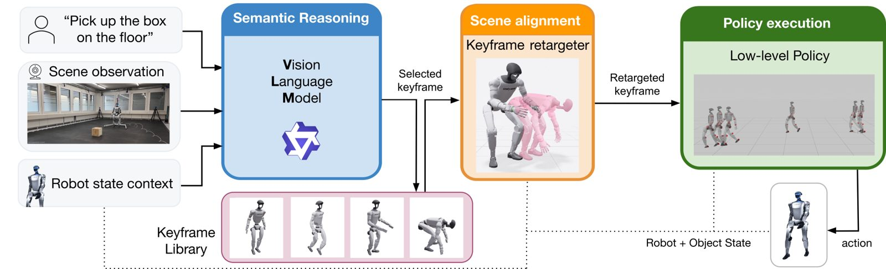
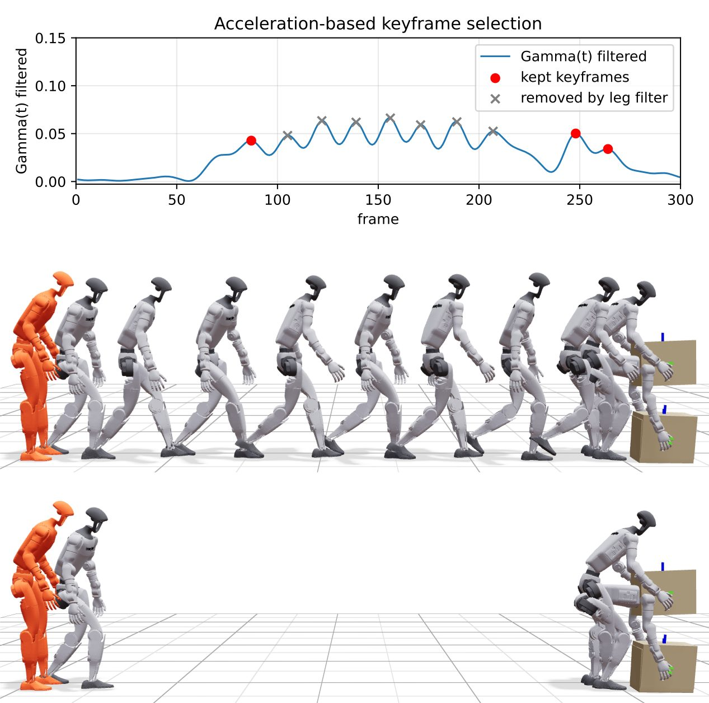
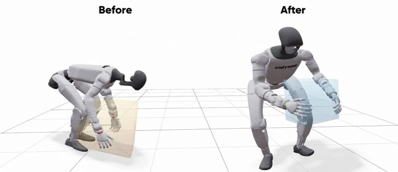
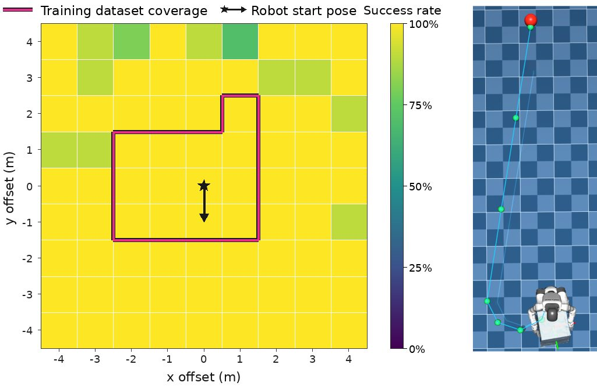
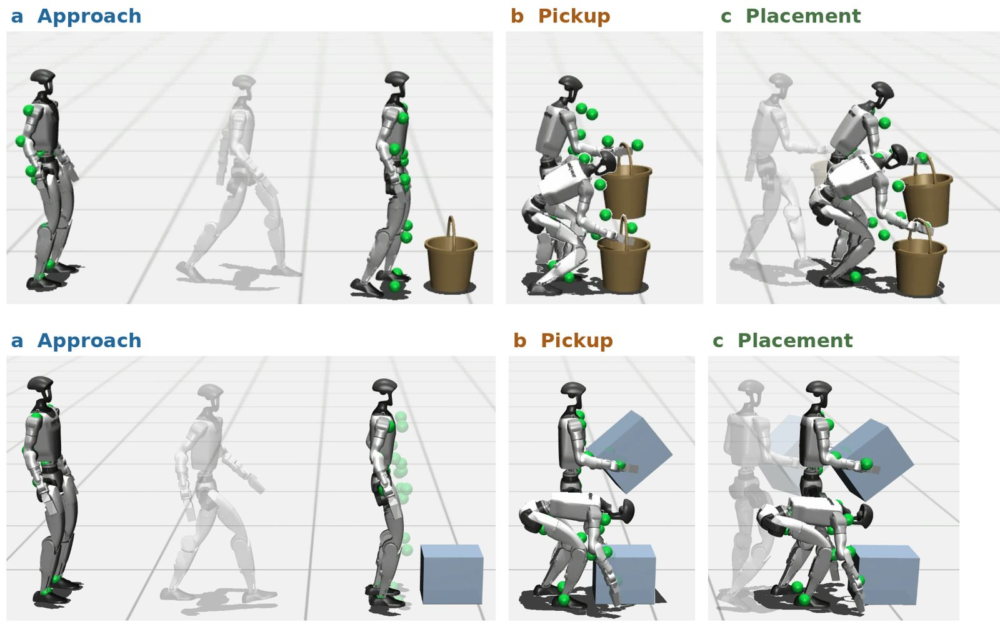

A Keyframe Interface for VLM Planning and Whole-Body Control in Humanoid Loco-Manipulation
Humanoid loco-manipulation requires robots to interpret task instructions and scene semantics while executing coordinated whole-body motions. We propose a hierarchical framework that uses motion keyframes as an intermediate representation between Vision-Language Model (VLM) planning and Reinforcement Learning (RL) control.
Each keyframe specifies a target whole-body robot pose and, when applicable, an object pose. Given a language instruction, scene observations, and execution feedback, the VLM selects successive task-relevant keyframes from a predefined library. The selected keyframes are retargeted to the current scene to account for object poses and dimensions. A keyframe-conditioned whole-body policy then generates joint-level actions to reach these goals.
We introduce a saliency-based keyframe sampling strategy for low-level policy training that improves end-to-end task success rate from 44% to 92% when using sparse VLM keyframes. We evaluate our framework on object pickup, transport, and placement tasks in simulation and on a Unitree G1 humanoid. The system performs both one- and two-handed manipulation and generalises to placement locations beyond the training reference data.
For “move the box to the target”, the VLM picks six poses from the keyframe library, one at a time, and waits for the robot to reach each before choosing the next. Select a keyframe to see it.

Qwen3.6-27B reads the instruction, a third-person image and a planner context (previous keyframe, success flags, robot, object and target poses, goal errors) and returns one keyframe as structured JSON. Under 0.2 s per query on one RTX 4090.
End-effector and root targets are mapped from the library object’s bounding box to the observed one, then damped least-squares IK recovers the full pose with feet on the ground. About 5 ms.
A keyframe-conditioned PPO policy outputs 29 joint targets for the Unitree G1 from proprioception, object pose, the previous action and the goal, with a 10-step observation history.
Uniformly sampled training goals are mostly walking frames, so the policy rarely practises the pick and place poses the VLM will ask for. KINO samples keyframes where the motion actually changes stage.
Peaks of the low-pass filtered body acceleration give candidates; candidates dominated by periodic leg motion are removed; the rest are aligned with peaks in the object’s vertical acceleration.


Each point keeps its normalised position relative to the object’s bounding box (centre \(\mathbf{c}\), rotation \(\mathbf{R}\), half-extents \(\mathbf{h}\)):
For long walks, a curvature-limited arc or Dubins path (curvature \(\le 3\,\mathrm{m}^{-1}\)) is split into intermediate locomotion keyframes, each at most 45° of heading change and 2 m apart.
Success rate per stage over 100 trials. Start distance 0.5–2.3 m, target 0.2–2.0 m from the box; success within 0.3 m.

| Stage | Sampling | Root (m) ↓ | Joint RMSE (rad) ↓ | Object (m) ↓ |
|---|---|---|---|---|
| Approach | Uniform | 0.125 ± 0.050 | 0.099 ± 0.007 | – |
| Saliency | 0.113 ± 0.047 | 0.075 ± 0.004 | – | |
| Pick | Uniform | 0.149 ± 0.043 | 0.150 ± 0.020 | 0.170 ± 0.094 |
| Saliency | 0.119 ± 0.034 | 0.116 ± 0.007 | 0.043 ± 0.035 | |
| Place | Uniform | 0.162 ± 0.048 | 0.139 ± 0.009 | 0.082 ± 0.026 |
| Saliency | 0.067 ± 0.018 | 0.121 ± 0.004 | 0.227 ± 0.043 |
The one exception is object error when placing: the reference place keyframe holds the box too close to the robot, and the policy matches the root target while setting the box down further away.

@article{chen2026kino,
title = {KINO: A Keyframe Interface for VLM Planning and Whole-Body Control
in Humanoid Loco-Manipulation},
author = {Chen, Sitong and Zargarbashi, Fatemeh and Cheng, Jin and
An, Tianxu and Coros, Stelian},
journal = {arXiv preprint arXiv:2609.18869},
year = {2026}
}